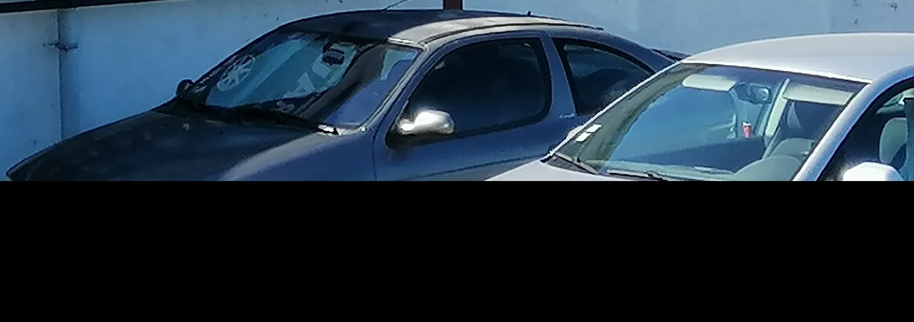
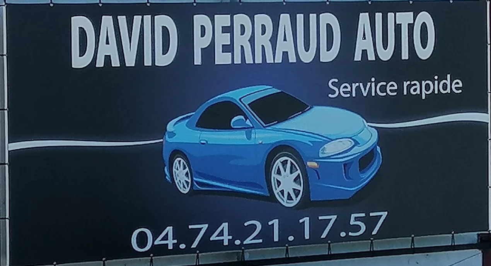
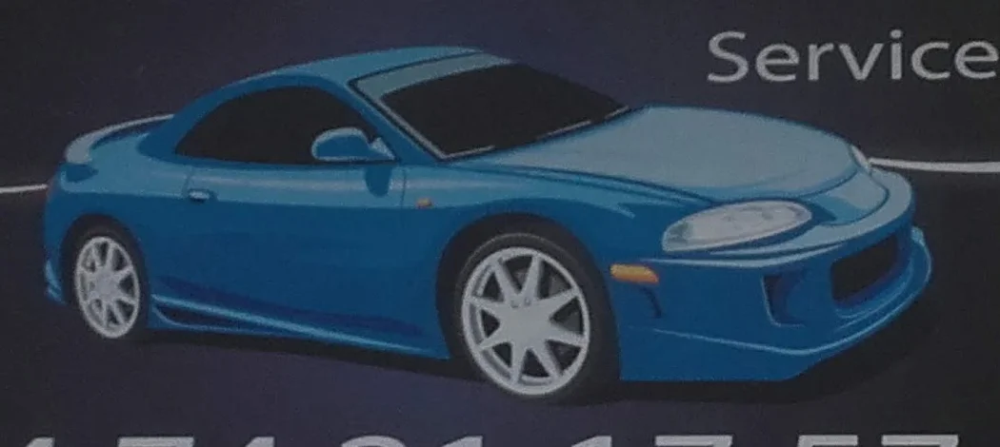
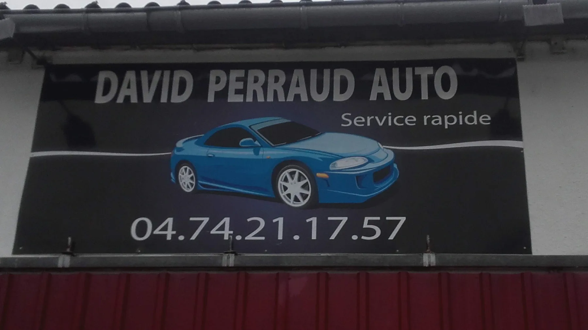
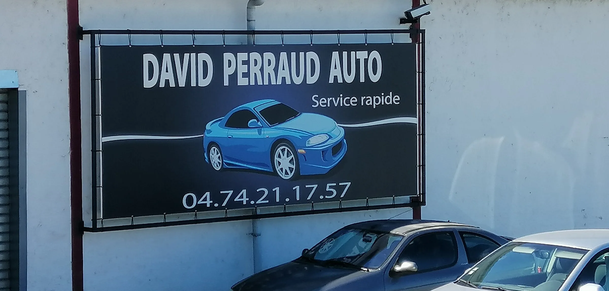

Votre voiture entre de bonnes mains

275 rue des Frères Lumière, Châtillon-sur-Chalaronne.
Du lundi au vendredi


Le garage honnête de Châtillon-sur-Chalaronne. Ce sont ses clients qui le disent.
David Perraud vous accueille dans son garage de la rue des Frères Lumière. Entretien, réparation, diagnostic : il trouve la solution adaptée à votre voiture, et prend le temps de vous l’expliquer.


275 rue des Frères Lumière, Châtillon-sur-Chalaronne.
Du lundi au vendrediListe détaillée des prestations et des marques à confirmer avec le garage.
Google · 2026« Si vous cherchez un garage pour entretenir votre véhicule et ce de façon honnête, sans pousser à la consommation, qui vous propose des solutions adaptées à vos besoins ! Il n’y a pas de doute c’est chez Mr Perraud David qu’il faut aller. »
Google · 2025« Cliente depuis de nombreuses années je recommande vivement ce garage, mécanicien très professionnel, disponible, sympathique. Et surtout, personne honnête en qui on peut avoir confiance les yeux fermés ! »
Google · 2025« Un des meilleurs garage que je connaisse, toujours bien accueilli parle très bien avec ses clients, très bosseur très connaisseur. Un bon garagiste honnête quoi ! »
« Sans pousser à la consommation. » Le mot qui revient dans les avis.
« Diagnostic rapide et précis. » On cherche la vraie cause.
« Prend le temps d’expliquer au client. » Vous savez ce qui est fait.
« Des tarifs plus que raisonnables. » Pas de mauvaise surprise.
275 rue des Frères Lumière
01400 Châtillon-sur-Chalaronne
Horaires affichés sur Google, à confirmer avec le garage.